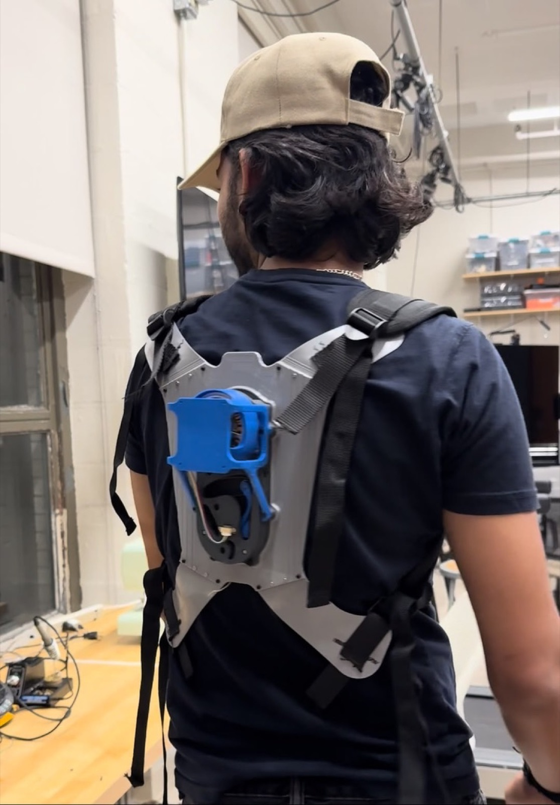
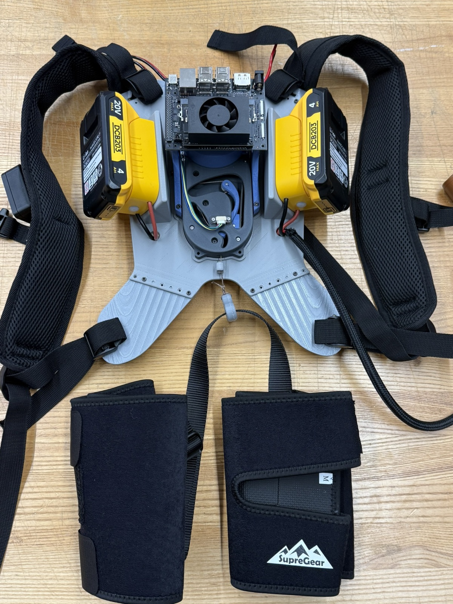
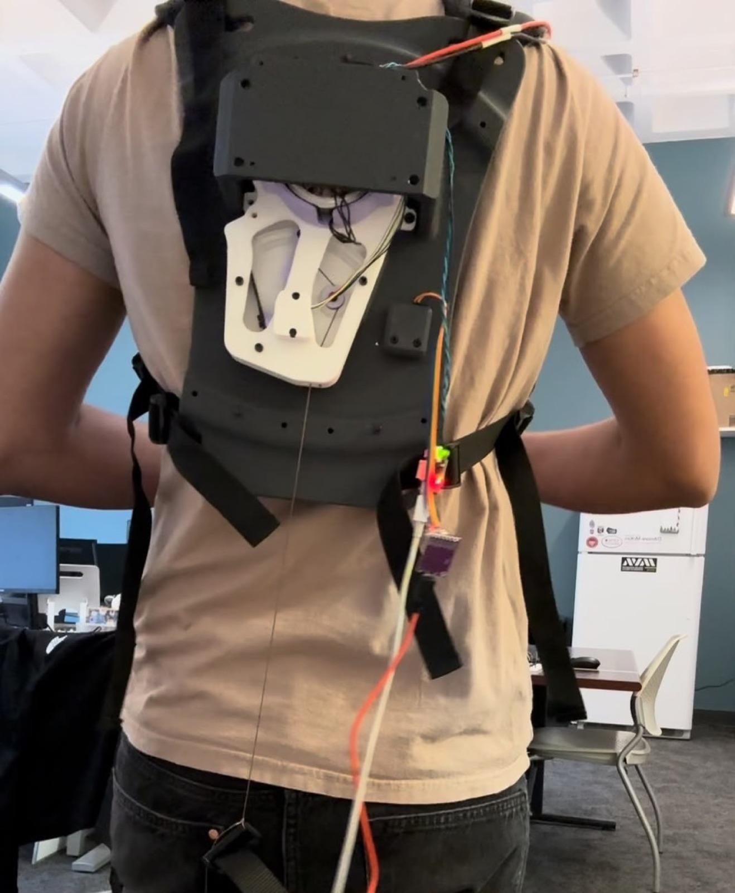

Motorized Back Exoskeleton.
My MS thesis: a powered back exoskeleton for industrial fatigue reduction. I designed the full wearable mechanical system (frame, harness, actuator mounts and cable routing), adapted a cable-driven actuator for industrial lifting loads, and built the benchtop rigs that characterized it.

Full mechanical system
Integrated 8:1 planetary
FUTEK LSB200 · 41-ch DAQ
Python · moteus
The brief.
Industrial lifting wears people out. The load on the lumbar spine during repeated bending is the kind of thing that does not injure anyone on a single lift and injures plenty of people over a career. A powered back exoskeleton puts some of that load somewhere else.
My thesis was to take a cable-driven actuator developed in the lab and build a wearable system around it that could deliver useful assistance during industrial lifting. Before that, I built the apparatus that characterized the actuator in the first place.
Designing the wearable system.
An actuator on a bench is a machine. An actuator on a person is a machine plus a fit problem, a load-path problem, and a comfort problem, and the last one decides whether the device ever gets worn. I designed the full wearable mechanical system end to end in SolidWorks.
01 · Back frame
The frame is what makes assistance useful rather than just present. It has to carry actuator reaction force into the body at places that tolerate load, stay rigid enough that assistance reaches the wearer instead of flexing the structure, and still allow the torso motion a person needs to do the job.
02 · Ergonomic harness
The harness is the interface where the whole design succeeds or fails. Assistive force has to transfer through padded contact spread over area, because pressure concentrated on a small patch stops being assistance and starts being the reason someone takes the device off after twenty minutes.
03 · Actuator mounts and cable routing
The actuator has to sit somewhere that keeps the cable path clean through the full range of bending. Cable routing on a wearable device is a moving-geometry problem: path length changes as the wearer bends, and the routing has to accommodate that without binding, chafing, or changing the effective transmission partway through a lift.
04 · Torque analysis and motor sizing
The lab actuator was not built for industrial lifting loads, so I ran a torque upgrade analysis and sized the motor for the assistance the application actually needed, then reworked the actuator to match: inverted the motor orientation and redesigned the main body and cable spool for the exoskeleton's load path and packaging.
05 · From v1 to v2
The first build was tethered: power and compute lived off-board, which is fine on a bench and useless anywhere a person actually works. The second version carries everything. Two 20 V tool batteries and an NVIDIA Jetson mount directly to the back plate, which made the frame a structural and a packaging problem at the same time. Mass sitting high on the back is mass the wearer carries all day, so where those components sit is a design decision rather than a leftover.

Sensing & control.
The device has to know what the wearer is doing before it can help. I developed IMU and cable-length sensor fusion with control logic for real-time bend and lift detection and torque control, so assistance arrives during the lift rather than after it.
Characterizing the actuator.
Before any of the wearable work, the actuator itself had to be measured. I designed the benchtop apparatus for that in SolidWorks, and it became three setups rather than one because the questions were different at each end of the force range.
- Low-force setup. Cable over a load-cell pulley to a motorized perturbation source with a mechanically adjustable lever, so one rig sweeps disturbance amplitude without a rebuild.
- High-force setup. Cable driving a torque-sensor-instrumented lever, with a high-torque motor applying controlled perturbations under load.
- Linear-rail setup. Cable over a load-cell pulley to a cart on a linear rail, pushed by hand. Transparency you can feel, not just plot.
Most of the design effort went into stiffness, alignment, and repeatability rather than part count. A fixture that flexes under load quietly adds itself to your results, and a rig you re-shim between runs makes two test days incomparable.
I wrote the acquisition stack in Python, logging 41 channels per sample across the motor controller and load cell on a common clock, with bidirectional loading and unloading sweeps, swept-frequency disturbance profiles across a range of amplitudes, and a plotting pipeline that turns each run straight into figures.
Under review.
The actuator design is the subject of a paper currently under peer review, so the mechanism details and measured performance are not public yet. Happy to walk through all of it in conversation.
Build & fit.
